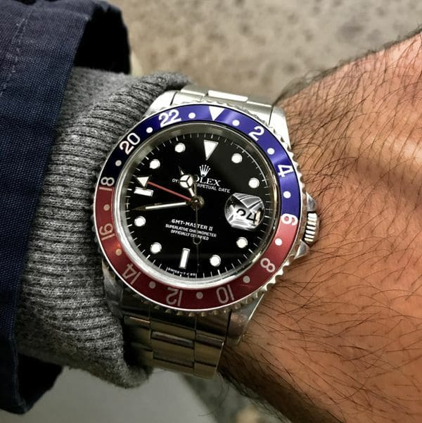
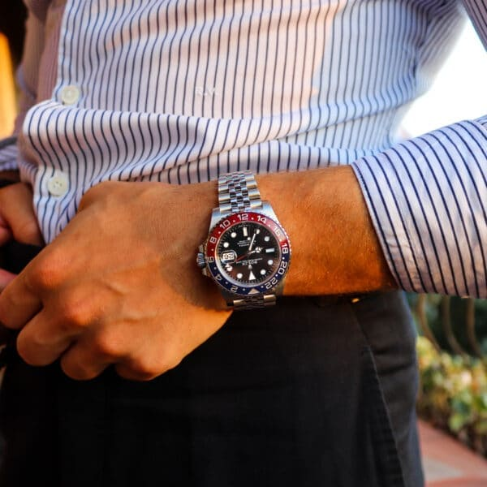
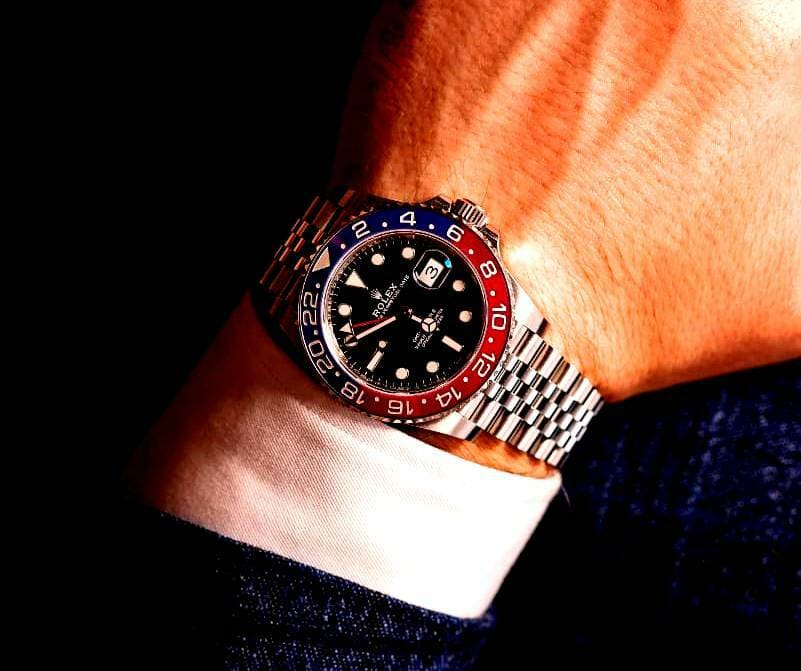

WAKTU PEMESANAN BARANG
Harga asli: Rp 7.500.000
Harga promosi: Rp 799.000
PROMOSI TERSISA:
*** Tersedia 5 buah terjual seharga Rp 799.000
{kind=link}
{kind=link}
{kind=link}
{kind=link}
{kind=link}
{kind=link}
Pengenalan umum
DUA ZONA WAKTU
SERENTAK
Saat bepergian, pemilik jam tangan ini dapat melihat waktu di dua zona waktu yang berbeda secara bersamaan. Dial GMT-Master II dengan jarum jam, menit dan detik tradisional, jarum 24 jam dengan segitiga di ujungnya dan bezel berputar dua arah dengan skala 24 jam pada cakram Cerachrom menampilkan waktu lokal dan referensi atau waktu lokal dan waktu sabuk jam lainnya.
GMT-Master II kaliber 3285 dilengkapi dengan mekanisme yang memungkinkan Anda mengatur waktu lokal secara bebas menggunakan kenop, tanpa menghentikan arloji dan jarum 24 jam. Oleh karena itu, pemilik jam tangan ini dapat membaca waktu setempat dan waktu wilayah asal secara bersamaan. Perubahan tanggal terkait dengan jarum jam tradisional (waktu setempat).
Desain terkenal
Pada model pertama dari tahun 1955, bezel dengan skala 24 jam bertingkat dibagi menjadi dua bagian, salah satunya, merah, sesuai dengan siang hari, dan yang lainnya, biru, untuk malam. Seiring waktu, bezel telah diperkenalkan dalam berbagai kombinasi warna. Awalnya terbuat dari plexiglass, digantikan oleh aluminium anodized pada tahun 1959 dan keramik berteknologi tinggi pada tahun 2005.
Mekanisme generasi baru
GMT-Master II ditenagai oleh kaliber 3285, mesin jam generasi baru yang sepenuhnya dikembangkan dan diproduksi oleh Rolex. Sebagai lambang teknologi mutakhir, mesin pemuntir otomatis ini menawarkan keunggulan signifikan dalam hal presisi, kemudahan penggunaan dan keandalan, serta ketahanan terhadap guncangan dan medan magnet. Kaliber 3285 memiliki cadangan daya sekitar 70 jam.
ROTATING BEZEL DENGAN
SKALA 24 JAM
Selain jarum jam, menit, dan detik konvensional, GMT-Master II dilengkapi dengan jarum penunjuk berujung yang menyelesaikan putaran penuh dalam 24 jam, serta bezel berputar dua arah dengan skala 24 jam bertingkat. Jarum 24 jam yang sangat terlihat menampilkan waktu referensi lokal dari zona waktu pertama menggunakan tanda pada bezel.
Pesan sekarang dengan harga promo Hanya Rp 799.000
"Garansi resmi 1 tahun- Bergaransi ganti baru selama bulan pertama- Jika kesalahan disebabkan oleh produsen"
Jika ada masalah tentang produk, segera hubungi kami, staf kami akan menjawab pertanyaan anda dan ada kebijakan garansi untuk anda.
Komentar pelanggan tentang
ROLEX
Mari kita lihat apa yang dikatakan
pelanggan tentang Jam Tangan Rolex!
Andik Pramana
Pebisnis real estate
Pelanggan setia dan telah membeli produk pada kesempatan ulang tahun ini, ROLEX benar merek kelas internasional sejati!
Yogi Prasojo
Jurnalis-fotografer
Tidak pernah cocok dengan jam tangan. Terkadang mereka rusak, terkadang tersesat. Karena itu, saya tidak pernah membeli jam tangan yang mahal. Sayang sekali kalah. Tetapi pada titik tertentu dia memutuskan bahwa ada sesuatu yang perlu diubah dan membeli jam tangan di toko ini. Saya berpikir lama. Alhasil, Rolex GMT II. Semua orang menyukainya, mereka bertanya di mana mereka membelinya. Saya terbiasa dengan mereka dengan cukup cepat dan sekarang saya tidak dapat membayangkan diri saya sendiri tanpa jam tangan ini.
Elang Tripraptomo
Pebisnis real estate
Saya sudah lama ingin memesan jam tangan berkualitas untuk diri saya sendiri, pilihan jatuh pada model khusus ini. Pemesanan dilakukan hanya dalam 2 menit, pengiriman memakan waktu 5 hari, semuanya aman dan sehat. Mereka bekerja dengan sempurna, mereka terlihat lebih baik daripada di foto, jelas bahannya berkualitas tinggi, tali kulitnya lembut, sangat nyaman dipakai. Baru saja terjebak hujan, arlojinya tidak rusak! Sarankan!
Pesan sekarang dengan harga promo Hanya Rp 799.000